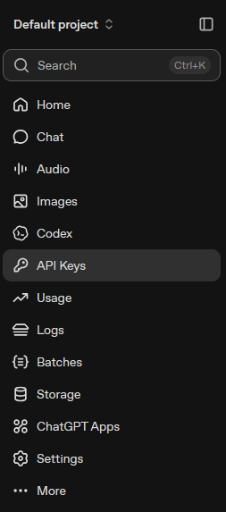
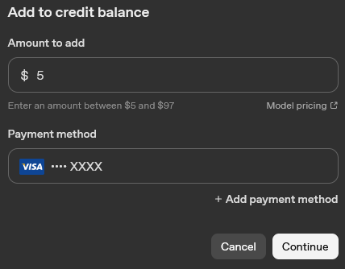
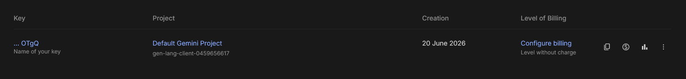

翻訳プロバイダー
DeepL
用途：高品質な機械翻訳（文体の丁寧さに対応）。
- https://www.deepl.com/pro-apiでAPIの利用登録をします。Developerプランのカードで、
Sign up for freeを選択します。DeepLでメールアドレスを認証した後、支払いカードの確認手続きを完了します。カードの確認はアカウントの検証に使用されますが、Developerプランには課金されません。無料のDeveloperプランには、1,000,000文字分の1回限りのクレジットが含まれています。

- https://www.deepl.com/your-account/keys（Account ▸ API Keys）を開き、
Authentication Keyをコピーします。

- キーをSubVox Pro（Settings ▸ DeepL）に貼り付けます。SubVox Proは、FreeとProのエンドポイントを自動的に判別します。
ヘルプ：https://support.deepl.com/hc/en-us/articles/360020695820-API-key-for-DeepL-API
Google Cloud Translation
用途：機械翻訳。
- https://console.cloud.google.comでGoogle Cloud Consoleを開き、プロジェクトを作成（または選択）します。新しいGoogle Cloudアカウントには$300の試用クレジット（90日間）が付与され、Cloud Translation には月間500,000文字の無料利用枠が含まれています。無料枠を利用する場合でも、請求先アカウントが必要です。
- APIs & Services ▸ LibraryでCloud Translation APIを検索し、Enableをクリックします。
- APIs & Services ▸ Credentialsで、Create credentials ▸ API keyをクリックします。キーをコピーします（必要に応じて、使用先をCloud Translation APIに制限します）。
- SubVox Pro（Settings ▸ Google Translate）にキーを貼り付けます。
ヒント：試用クレジットが切れた際の予期せぬ出費を避けるため、クォータ／予算のアラートを設定してください。
OpenAI
用途：音声認識、LLMによる翻訳（および単語のスタイルを他の言語に引き継ぐ処理）、音声合成による吹き替え。1つのキーでこれら3つすべてに対応します。
- https://platform.openai.comでアカウントを作成するか、既存のOpenAIアカウントでログインします。

- プロジェクトのサイドバーで、API Keysを開きます。

- Create new secret keyをクリックします。

- 必要に応じてキーに名前を付け、正しいプロジェクトが選択されていることを確認し、必要な権限を選択してから、
Create secret keyをクリックします。

- すぐにキーをコピーしてください。OpenAIではシークレットキーの全文は1回しか表示されません。このダイアログを閉じると、再度表示できません。

- https://platform.openai.com/settings/organization/billing/overviewからプリペイドクレジットを追加します。また、アカウントメニューを開き、Organization settingsまたはProfile settingsに移動し、設定サイドバーでBillingを選択する方法もあります。


- Billingの概要画面で、Add to credit balanceをクリックします。API呼び出しの料金はこの残高から差し引かれます。

- 追加する金額を入力し、支払い方法を選択または追加してから、Continueをクリックします。プラットフォームに表示される最低追加額は、通常$5です。

- シークレットキーをSubVox Pro（Settings ▸ OpenAI）に貼り付けます。翻訳パネルでモデルを選択します。吹き替えを行う場合は、Text-to-SpeechタブでプロバイダーとしてOpenAIを選択し、次にモデルとして gpt-realtime-2.1-mini（10種類のボイス、voice direction（演技指示）に対応）を選択します。このモデルはRealtime API経由で利用します。既存のモデル選択は自動的に移行されます。廃止されたボイスfable、nova、onyx については、新しいボイスを選択する必要があります。Realtimeは、台本を一字一句そのまま読み上げる指示のもとで動作します。生成されたセリフを確認してください。 Realtime音声出力料金は、1分あたり約$0.024に加え、テキストトークン料金（入力100万トークンあたり$0.60、出力100万トークンあたり$2.40）がかかります。 Batch（バッチ）の料金見積もりには音声とテキストの両方が含まれ、1秒あたり14文字、1トークンあたり4文字を基準としています。voice directionや話すテンポによって、請求額が変動する場合があります。文字起こしを行う場合は、Speech-to-TextタブでOpenAIを選択し、その後モデルを選択します。
Transcriptionモデル — 選択する前にお読みください。
- **
gpt-transcribe：録音音声用の現在のモデルです。APIは単語（word）のタイムスタンプを含まないテキストを返します。 SubVox Proがクリップ全体にわたってタイミングを推定します。タイミングが重要な場合は、ローカルのアラインメント機能または単語のタイムスタンプを提供するプロバイダーを使用してください。- 保存済みの
whisper-1、gpt-4o-transcribe、gpt-4o-mini-transcribe**の選択は、gpt-transcribeへ移行されます。これにより、whisper-1が以前提供していた単語のタイムスタンプは提供されなくなります。- その他のプロバイダー（AssemblyAI、Gladia、Deepgram、Speechmatics、ElevenLabs、Rev AI、ローカルのWhisperおよびParakeet）は、句読点付きの単語とその時刻（time）情報を直接返します。タイミングが重要な場合は、これらを優先して使用してください。
文字起こしエンドポイントのアップロード上限は25 MBです。OpenAIの非推奨機能を参照してください。
OpenAIの利用ポリシーでは、プレイヤーに対し、再生される音声がAIで生成されたものであり、人間によるものではないことを明示することが求められています。例えば、ゲームのクレジットやストアページに記載してください。TTSの料金：https://openai.com/api/pricing
Anthropic (Claude)
用途： LLMによる翻訳（および単語のスタイルの引き継ぎ）。
- https://console.anthropic.comでアカウントを作成するか、既存のAnthropicアカウントでログインします。

- APIを使用する前に、利用クレジットを購入します。Anthropicはプリペイド方式で、クレジットがないとAPIリクエストは失敗します。コンソールでは、通常5 USDという少額から購入できます。

- Claudeコンソールのサイドバーで、API keysを開きます。

- Create keyをクリックします。

- ワークスペースを選択し、必要に応じてキーに名前を付けてから、Addをクリックします。

- 生成されたキーをすぐにコピーしてください。Anthropicは、この画面を閉じるとキーの全文を確認できなくなると説明しています。

- SubVox Pro（Settings ▸ Claude）にキーを貼り付けます。
Google (Gemini)
用途： LLMによる翻訳および音声合成による吹き替え（Geminiのボイス）。最も手軽な無料の選択肢です（課金不要）。1つのキーで両方を利用できます。
- https://aistudio.google.comのGoogle AI Studioにアクセスし、Googleアカウントでログインします。

- https://aistudio.google.com/app/apikeyでAPI keysを直接開き、
Create an API keyをクリックします。

- 必要に応じてキーに名前を付け、プロジェクトを選択または作成してから、キーを作成します。

- 詳細パネルからAPIキーをコピーします。

- キーがAPI keysの一覧に表示されます。ここでは、キーのコピーや使用状況の確認ができ、課金の設定も後から行えます。

- SubVox Pro（Settings ▸ Gemini）にキーを貼り付けます。吹き替えを行う場合は、プロバイダーとしてGeminiを Text-to-Speechタブで選択します。30種類の多言語ボイス（Kore、Puck、Ledaなど）と、 voice directionを設定するボタンを利用できます。利用可能なモデルは3つあります。gemini-3.1-flash-tts-preview（デフォルト、最も自然）、 gemini-2.5-flash-preview-tts（有料利用時の料金が半額）、gemini-2.5-pro-preview-tts（無料枠なし、課金が必要）です。
無料枠では課金不要ですが、レート制限があります。各モデルの制限はAI Studio （Rate limitページ）に表示されています。音声合成の制限が最も厳しく、1分あたりおよび1日あたりのリクエスト数は数回に限られます。 SubVox Proは、Googleが待機時間を通知した場合、その時間だけ待機して再試行し、 1日のクォータを使い切ると、明確なメッセージを表示して停止します。キーのプロジェクトで課金を有効にすると、これらの制限が解除されます。それ以外は、SubVox Proの動作は変わりません。無料枠では、Googleが自社製品の改善のために、入力したプロンプトを使用する場合があります。
DeepSeek
用途：低コストのLLMによる翻訳（OpenAI互換API）。
- https://platform.deepseek.comでアカウントを作成するか、既存のDeepSeekアカウントでログインします。
- DeepSeekはプリペイド方式です。プラットフォームでTop upを開き、APIを使用する前に残高を追加します。残高がない場合、APIリクエストは失敗します。
- API keys（https://platform.deepseek.com/api_keys）を開き、Create new API keyをクリックします。
SubVoxProのような識別しやすい名前を付け、すぐにキーをコピーしてください。キーの全文が表示されるのは1回だけです。 - そのキーをSubVox Pro（Settings ▸ DeepSeek）に貼り付けます。翻訳パネルでモデルを選択します。